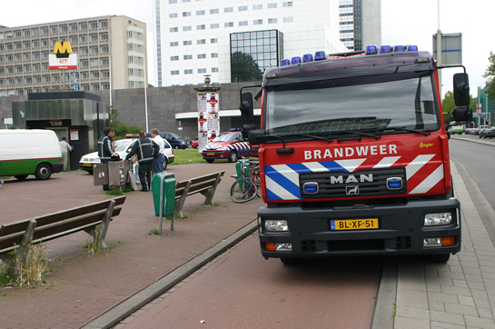
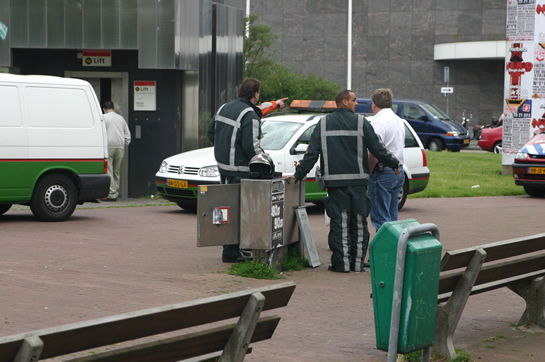
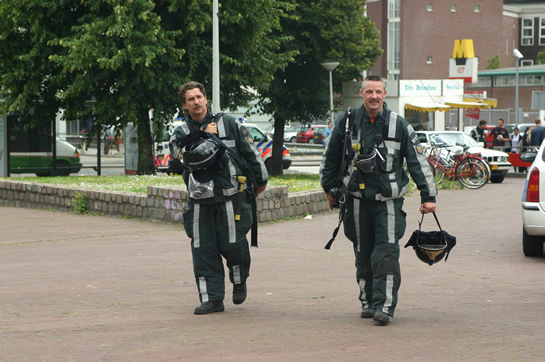
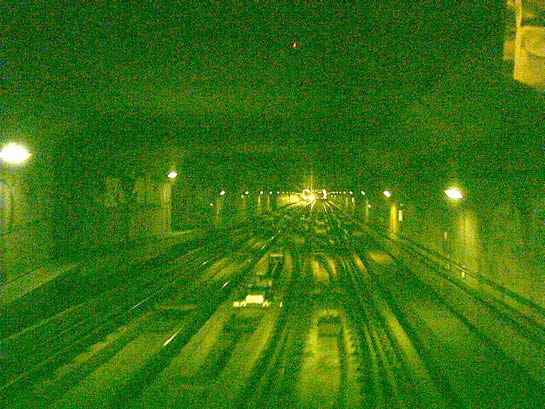
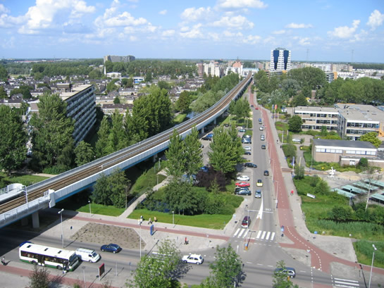
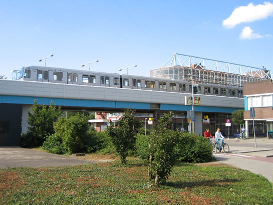
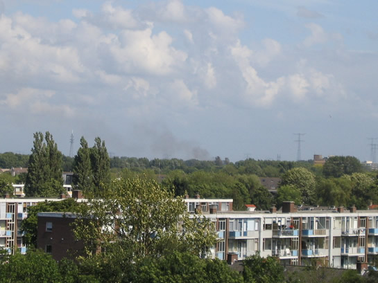

Brand zorgt voor grote vertragingen...
- donderdag 11 december 2008 22:08
- Geschreven door Joachim
22.30 uur, update 2
Donderdagmiddag, omstreeks 13.30 uur, ontstond rookontwikkeling in een metrostel op Dijkzigt spoor 1. Direct werd er groot alarm geslagen, waarop zeker twaalf brandweerwagens uitrukten. Hierbij zaten drie blusvoertuigen die vanaf verschillende kazernes uitrukten en zich op diverse plaatsen opstelden. De eerste tankautospuit ter plaatse stelde een onderzoek in op het inmiddels ontruimde station en kwam al vrij snel met het nadere bericht dat er geen brand zou zijn. De meeste brandweerauto's rukten hierop weer in.
Op de omliggende metrostations waren ondertussen verschillende metro's gestrand. Op de perrons werd het dan ook drukker en drukker. Pas nadat de brandweer definitief het sein "veilig" had gegeven, kon er begonnen worden met enkelspoor te rijden. Rond 14.00 uur werd hiermee begonnen. Omstreeks 14.20 werd het metrostel, dat bestond uit de combinatie 5245-5240-5256 naar de remise gebracht. De combinatie 5235-5222-5257 stond stroomloos doordat de spanning van de baan gehaald werd. De passagiers moesten op last van politie en brandweer in het rijtuig blijven zitten, later keerde dit metrostel terug naar Eendrachtsplein.
De oorzaak van de brand is onbekend, vermoedelijk is de rook ontstaan in metrostel 5245. De vertragingen als gevolg van het incident waren groot.

De brandweer rukte met groot materieel uit. Ook RET-personeel was aanwezig. *

Het station werd afgesloten totdat het sein veilig door de brandweer gegeven werd. *

Nadat de situatie onder straatnivo bekend was, konden diverse brandweer-eenheden weer terug naar de kazerne. *
* Foto's: Rémon Duivestein, MediaTv en Brandweer Rotterdam NoordOost.

Metro's zaten dicht op elkaar, zoals hier te zien. Door de brand ontstond er als het ware een metrofile... Ja! Ook dat kan!
Capellelijn
Als gevolg van een brand in de elektriciteitscentrale in Krimpen a/d IJssel, kon er niet gereden worden op de Capellelijn. Er werden tussen 16.00 uur en 18.20 bussen ingezet. Inmiddels kan het metrotracé weer bereden worden, omdat er weer baanspanning is. Metro's die naar Capelle moesten, konden keren op Capelsebrug of doorrijden naar Ommoord/Zevenkamp. De 5232 en de 5233 stonden tijdens de stroomuitval op station de Terp. Samen met de nasleep van de rookontwikkeling op Dijkzigt, werd het een rommelige middag op het metronet.

De passagiers konden niet met de metro mee, omdat deze niet reed, daarom werden zijn vervoerd met pendelbussen.

Rijtuigen 5232 en 5233 stonden stroomloos op station de Terp in Capelle a/d IJssel.

De oorzaak lag bij een brand in een trafo-eenheid van Eneco in Krimpen a/d IJssel.